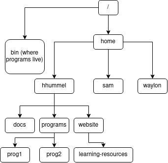

contents:
Though you may not know it, you already have navigated systems very like the Linux directory system. It's a folder tree much like you may have encountered on Windows or MacOSX, but instead of having a graphical window open and clicking to move from folder to folder, you are interacting with it through a command-line interface. As a result, you must use certain commands to do what you would ordinarily do with clicking and dragging.
ls - print the contents of the current directory.cd <dir> - if dir is in the current directory, move to it.cd .. - move up one directory.
Note that you can provide ls and cd with what we call "paths." These are descriptions of locations in the filesystem. For example, when you log into the Linux system at PSU, you begin in your home directory. The path to your home directory is /home/<your username>/.
Most Linux utilities (we refer to small programs like cd and ls as utilities) that take files as arguments can also be given entire paths, including paths that refer to things by working upwards in the file tree with "..".
Here's a simplified diagram of the Linux file tree:

What command would move you from /home/hhummel/website to /home/sam? Hover over the spoiler box below to check the correct answer.
cd ../../sam
cd /home/samwarning: these commands, if improperly performed could harm files. If you are unsure, contact a tutor or the #cshelp channel on the pdx-cs slack channel. If something goes wrong, you can contact the PSU CAT for a backup of your work.
The mv comand moves a file from one location to another. It can also be used to rename files by simply giving it two names, instead of two locations.
mv <source file> <new location>
Another useful command for backing up files or making copies of files in other directories is cp. The usage for cp is fairly simplistic:
cp <source file> <destination for copy>cp -r <source directory> <destination for copy>Just like the above commands, improper usage of these commands could harm your files, so the same warning applies.
To archive your files (wrap them all up in one large file), we use tar:
tar -cvf example.tar directory-to-tar/
If you want to make vim a slightly more friendly place, simply create a file named .vimrc in your home directory. Inside that file, you can do the following:
syntax enable syntax highlighting.set number line numbering.set autoindent continue the indentation of the previous line.set smartindent syntax-aware indentation rules (you want both this and autoindent.)